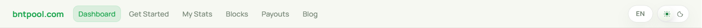
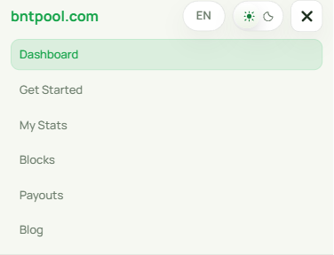

Pool navigation
Status is removed from the shared desktop and mobile menu. The direct status route is preserved.
Source base d1dd758; App.tsx blob a7c1b4800fd5fa920a11a0851e8e905b283fc350. Captured and reviewed October 31, 2026 (EDT), through the Windows Playwright MCP with synthetic data.
Desktop · 1366px

Mobile menu open · 390px
